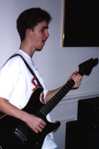

This is me. My name is Cha-Chee, and I am a college boy here at the University of Texas at Austin. I do the programing and most of the writing for this magazine, and frankly, I love it. I am sensitive, yet understanding, and I enjoy candle light dinners, long walks on the beach, and cuddling up by the fireplace. -Oh, yes, and the occasional makin' bacon.
-E-mail me with comments or suggestions!
Lord_Cha-Chee_The_Indescribably_Wonderful@mail.utexas.edu
That's really my address! REALLY!
Hey, I'm E-boy and I'm well known for being an expert at remembering the lyrics of hit songs from any era, and I have been told several times that I smell like taffy. I have also been told many times that I do not smell like taffy, so decide for yourself. I am a lover of fine things, a finder of lovely things, and I hate, hate, HATE bugs.
-Write to me!
christob@post.cis.smu.edu
Frankly, I'm dissapointed. In you, that is. I put in enough effort to write you an article and a bio, and none of you cretins took the time to write me. So this month, I want something in return. I put forth three times the effort this issue, so I want three times the e-mail (That only accounts for nine people.) Come on, tell me, is it a B.O. problem or something? What?!
-Tell me how cool I am.
thalken1@airmail.net
Have you ever been sitting there and wondered to yourself,"Why me?" Well, I haven't, because I know why, and I'm not going to tell you. But aside from knowing the meaning of life, there's really not a whole lot to me. As far as wit goes, however, I'm A-list. I was voted Mr. Wit at last year's "Who's the Wittiest of Them All?" contest, and I took home a beautiful trophy adorned with a large, golden statue of Michael Dukakis. Now my fish have an algae infested statue to swim around! Woo-hoo!
-Send me stuff.
enorth@mail.utexas.edu
Please Dirrect any Comments or questions about the magazine to Cha-Chee, or keep them to yourself and see if anything comes of them. If you like this magazine, please, just tell your friends. It is here solely for your enjoyment, and the more people that read this, the more we can justify putting alot of work into making the next issue. This magazine was skill-crafted by hand, and not by any of those stupid page makers. I HATE those things.
-oh yes. And if you would like to recieve e-mail when this page is updated(which is once a month) just ask.